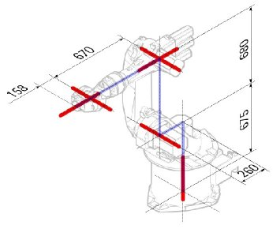
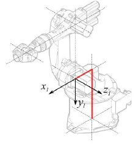
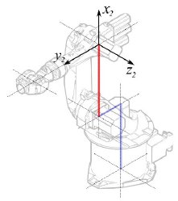
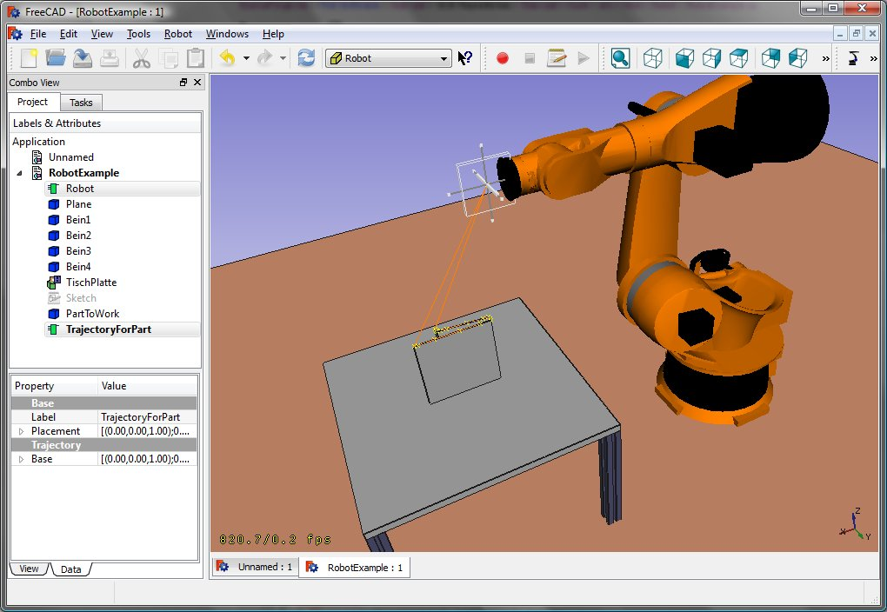

|
| Topic |
|---|
| Robot Workbench |
| Level |
| Intermediate |
| Time to complete |
| Unknown |
| Author |
| FreeCAD version |
| Example File(s) |
Denna artikel handlar om hur man hämtar in en standard 6-Axlig industrirobot till FreeCAD för simulering
Beskrivningen följer Denavit-Hartenberg Parameter systemet, som även beskrivs i John J. Craigs bok "Introduction to Robotics".
Exempel Kuka

|

|
 |
{kind=link}
Kinematik
| Segment | Parameter | Beskrivning |
|---|---|---|

|
Basens konfiguration | |
|  |
<math>\theta_{1} = q_{1}</math> <math>d_{1} = 675 mm </math> <math>a_{1} = 260 mm </math> <math>\alpha_{1} = −90</math>° |
Segment 1 |
|  |
<math>\theta_{2} = q_{2} - 90</math>° <math>d_{2} = 0 mm </math> <math>a_{2} = 680 mm </math> <math>\alpha_{2} = 0</math>° |
Segment 2 |

|
<math>\theta_{3} = q_{3} </math> <math>d_{3} = 0 mm </math> <math>a_{3} = 0 mm </math> <math>\alpha_{3} = 90</math>° |
Segment 3 |

|
<math>\theta_{4} = q_{4} </math> <math>d_{4} = -670 mm </math> <math>a_{4} = 0 mm </math> <math>\alpha_{4} = -90</math>° |
Segment 4 |

|
<math>\theta_{5} = q_{5} </math> <math>d_{5} = 0 mm </math> <math>a_{5} = 0 mm </math> <math>\alpha_{5} = 90</math>° |
Segment 5 |

|
<math>\theta_{6} = q_{6} </math> <math>d_{6} = 0 mm </math> <math>a_{6} = -158 mm </math> <math>\alpha_{6} = 180</math>° |
Segment 6 |
{kind=link}
{kind=link}
Detta leder till följande tabell:
| <math>i</math> | <math>\theta</math> | <math>d</math> | <math>a</math> | <math>\alpha</math> |
|---|---|---|---|---|
| 1 | q1 | 675 mm | 260 mm | -90° |
| 2 | q2 - 90° | 0 mm | 680 mm | 0° |
| 3 | q3 | 0 mm | 0 mm | 90° |
| 4 | q4 | -670 mm | 0 mm | -90° |
| 5 | q5 | 0 mm | 0 mm | 90° |
| 6 | q6 | -158 mm | 0 mm | 180° |
Eftersom Kuka robotarna inte har alla axlar i 0 i den ritade L-Positionen, så behöver vi ändra axel 2 & 3 med 90°.
| <math>i</math> | <math>\theta</math> | <math>d</math> | <math>a</math> | <math>\alpha</math> |
|---|---|---|---|---|
| 1 | q1 | 675 mm | 260 mm | -90° |
| 2 | q2 | 0 mm | 680 mm | 0° |
| 3 | q3 - 90° | 0 mm | 0 mm | 90° |
| 4 | q4 | -670 mm | 0 mm | -90° |
| 5 | q5 | 0 mm | 0 mm | 90° |
| 6 | q6 | -158 mm | 0 mm | 180° |
I databladet så hittar vi ytterligare information om axlarna:

Vilket leder till den kompletta tabellen:
| <math>i</math> | <math>\theta</math> | <math>d</math> | <math>a</math> | <math>\alpha</math> | <math>\theta_{min}</math> | <math>\theta_{max}</math> | Axis Speed |
|---|---|---|---|---|---|---|---|
| 1 | 0 | 675 | 260 | -90 | -185 | 185 | 156 |
| 2 | 0 | 0 | 680 | 0 | -155 | 35 | 156 |
| 3 | - 90 | 0 | 0 | 90 | -130 | 154 | 156 |
| 4 | 0 | -670 | 0 | -90 | -350 | 350 | 330 |
| 5 | 0 | 0 | 0 | 90 | -130 | 130 | 330 |
| 6 | 0 | -158 | 0 | 180 | -350 | 350 | 615 |
Visuell representation
FreeCAD kan generera en grov bild ur kinematiktabellen. Men om du vill komma närmare verkligheten så kan du använda en VRML fil med robotens utseende för simuleringen. T.ex. Kuka handhar VRML filer för sina modeller. VRML filen laddas under skapandet av den specifika roboten i FreeCAD. För att FreeCAD ska kunna röra axlarna så måste vi redigera VRML filen och sätta in speciella omvandlingsnoder som FreeCAD kan hitta och manipulera.
Detta visas återigen med exemplet Kuka KR 16. med start från rad 1:
#VRML V2.0 utf8
#
# This VRML97 file was exported using eM-Workplace
# (c) Tecnomatix Technologies GmbH & Co. KG
# Heisenberg-Bogen 1
# D-85609 Aschheim-Dornach
# GERMANY
#
#Background
#{
# skyColor [0.752941 0.752941 0.752941]
#}
Transform
{
#rotation 1 0 0 -1.5707963
#scale .001 .001 .001
children
[
DEF AOBJ_0001_000_TRAFO Transform
{
children
[
...
Du ser att denna fil är exporterad med en robotsimuleringsmjukvara som kallas för Tecnomatix. Ta bort denna notis och skriv in en URL var du fick denna fil ifrån, därför att Tecnomatix har ingen upphovsrätt på filinnehållet. Det är endast en omvandlare! Först av allt så tar vi bort Background noden. Ta sedan bort rotation och scale noden för att få modellen i mm och uppåtpekande Z.
Aldeles vid slutet:
] }
] }
] }
]
}
#ROUTE SENS_04_OBJ.rotation_changed TO AXIS_04_OBJ.rotation
#ROUTE SENS_27_OBJ.rotation_changed TO AXIS_27_OBJ.rotation
#ROUTE SENS_32_OBJ.rotation_changed TO AXIS_32_OBJ.rotation
#ROUTE SENS_44_OBJ.rotation_changed TO AXIS_44_OBJ.rotation
#ROUTE SENS_46_OBJ.rotation_changed TO AXIS_46_OBJ.rotation
#ROUTE SENS_49_OBJ.rotation_changed TO AXIS_49_OBJ.rotation
#DEF AnySIMTimer TimeSensor
#{
# cycleInterval 1.000000
# loop TRUE
#}
Kommentera bort TimeSensor och de 6 rutterna. Dessa 6 rader ger dig ett tips på var robotens axlar är någonstans! Sök först efter "AXIS_04_OBJ" som tar dig till den platsen:
...
Transform { rotation 1 0 0 1.570796 children [
DEF SENS_04_OBJ-0001 CylinderSensor
{
diskAngle 1.570796
minAngle -3.228859
maxAngle 3.228859
offset 0.000000
}
DEF FREECAD_AXIS1 Transform { rotation 0 1 0 0 children [
DEF AXIS_04_OBJ-0001 Transform
{
children
[
Transform { rotation 1 0 0 -1.570796 children [
DEF AOBJ_0001_003_TRAFO Transform
{
rotation 1.000000 0.000000 0.000000 3.141593
translation -600.000000 500.000000 300.000000
children
[
...
Du måste precis innan definitionen av denna nod sätta in raden "DEF FREECAD_AXIS1 Transform { rotation 0 1 0 0 children [" vilket är FreeCADs ankare för att förflytta axeln.
Gör nu detsamma för FREECAD_AXIS2,FREECAD_AXIS3,FREECAD_AXIS4,FREECAD_AXIS5 och FREECAD_AXIS6. Glöm inte de stängande parenteserna vid slutet av filen, och du är färdig!
Du kan ladda VRML:en genom att exemplifiera roboten:
App.activeDocument().addObject("Robot::RobotObject","Robot")
App.activeDocument().Robot.RobotVrmlFile = "C:/_Projekte/FreeCAD0.9_build/mod/Robot/Lib/Kuka/kr16.wrl"
vilket ska ge dig detta resultat: 
{kind=link}
KR 210
| <math>i</math> | <math>\theta</math> | <math>d</math> | <math>a</math> | <math>\alpha</math> | <math>\theta_{min}</math> | <math>\theta_{max}</math> | Axis Speed |
|---|---|---|---|---|---|---|---|
| 1 | 0 | 750 | 350 | -90 | -185 | 185 | 156 |
| 2 | 0 | 0 | 1250 | 0 | -155 | 35 | 156 |
| 3 | - 90 | 0 | 0 | 90 | -130 | 154 | 156 |
| 4 | 0 | -1100 | 0 | -90 | -350 | 350 | 330 |
| 5 | 0 | 0 | 0 | 90 | -130 | 130 | 330 |
| 6 | 0 | -230 | 0 | 180 | -350 | 350 | 615 |
KR 500
| <math>i</math> | <math>\theta</math> | <math>d</math> | <math>a</math> | <math>\alpha</math> | <math>\theta_{min}</math> | <math>\theta_{max}</math> | Axis Speed |
|---|---|---|---|---|---|---|---|
| 1 | 0 | 1045 | 500 | -90 | -185 | 185 | 156 |
| 2 | 0 | 0 | 1300 | 0 | -155 | 35 | 156 |
| 3 | - 90 | 0 | 0 | 90 | -130 | 154 | 156 |
| 4 | 0 | -1025 | 0 | -90 | -350 | 350 | 330 |
| 5 | 0 | 0 | 0 | 90 | -130 | 130 | 330 |
| 6 | 0 | -250 | 0 | 180 | -350 | 350 | 615 |